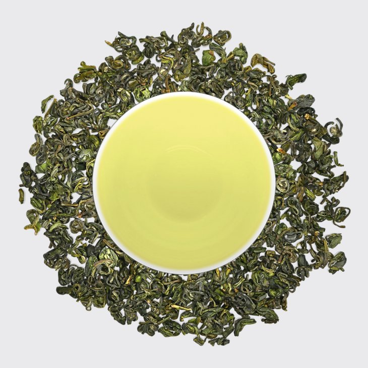
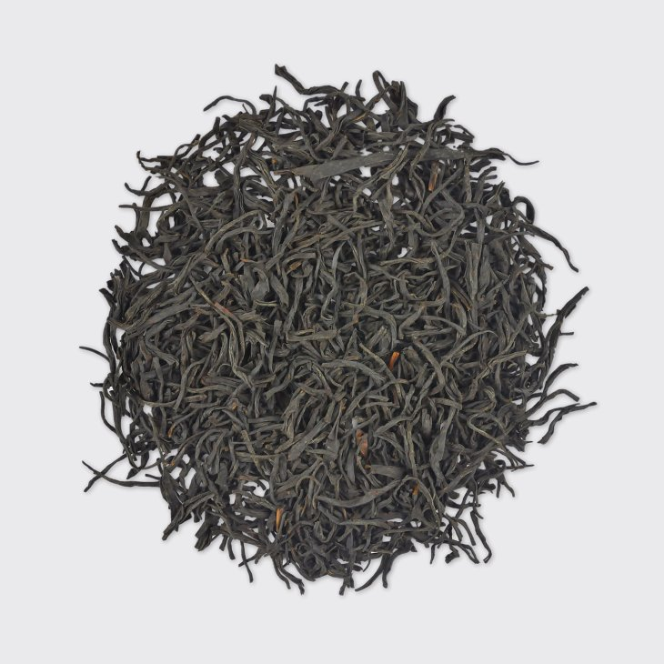
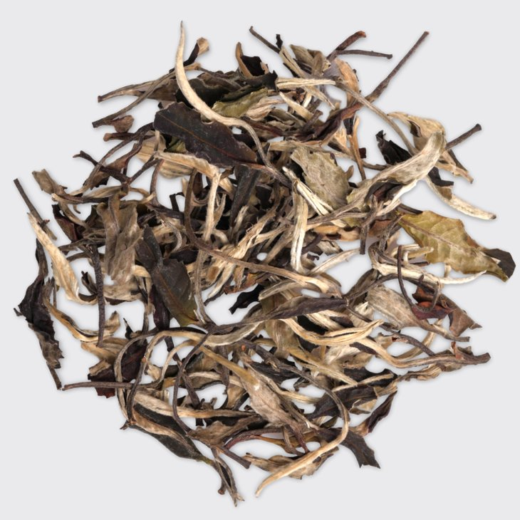
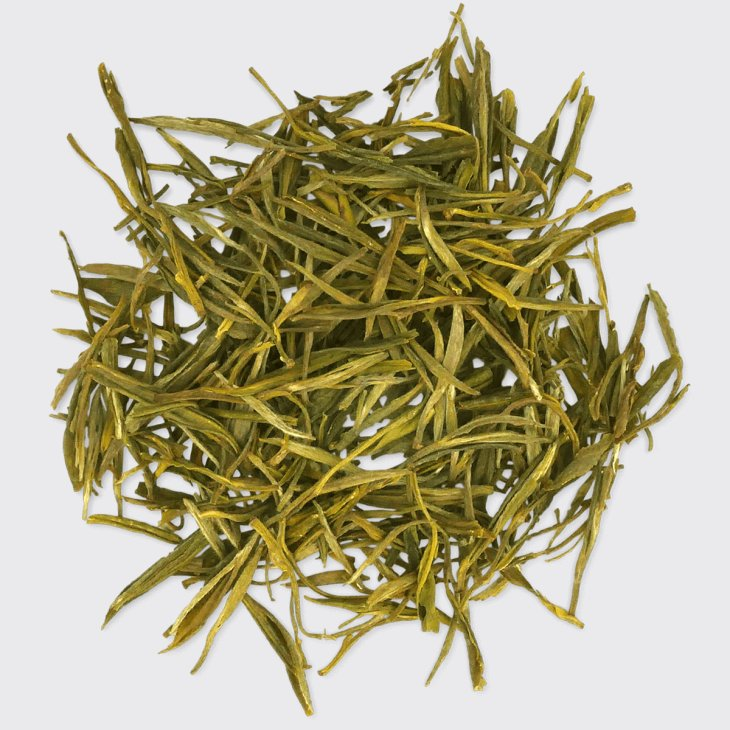
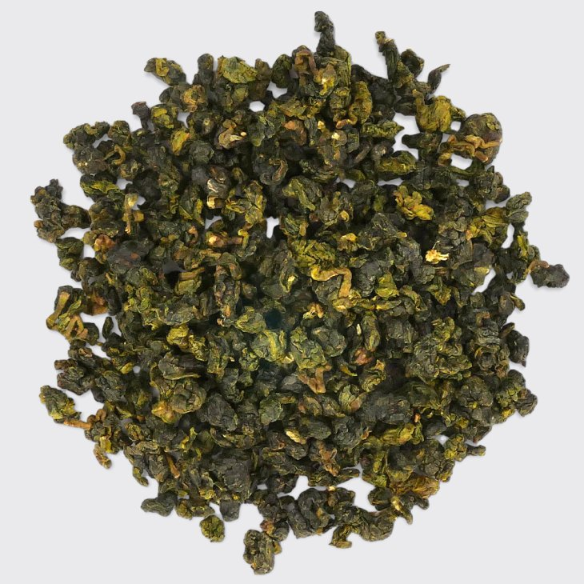
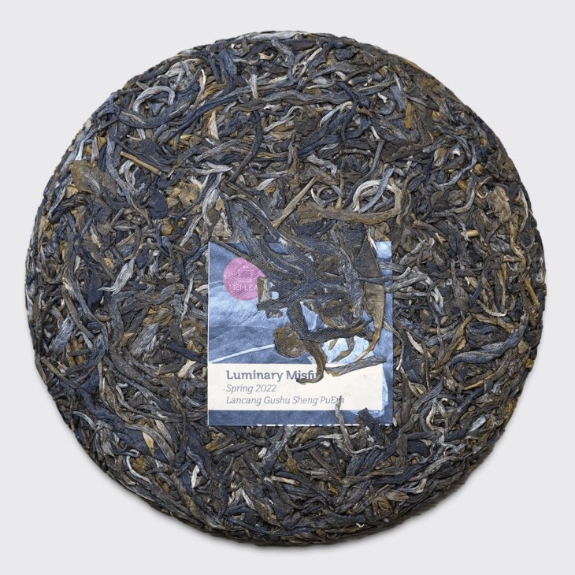

1 / 6

Ceai verde (Jade Fire, via Meileaf.com)
2 / 6

Ceai negru (Souchong Liquor, via Meileaf.com)
3 / 6

Ceai alb (Moonlight White, via Meileaf.com)
4 / 6

Ceai galben (Amber Mountain, via Meileaf.com)
5 / 6

Ceai oolong (Alishan Cream, via Meileaf.com)
6 / 6

Ceai fermentat (Sheng Pu'erh, via Meileaf.com)
❮
❯